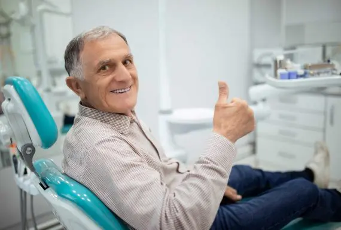
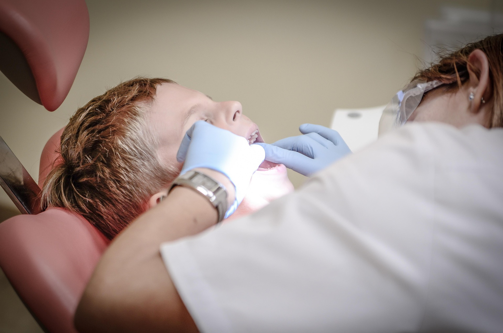
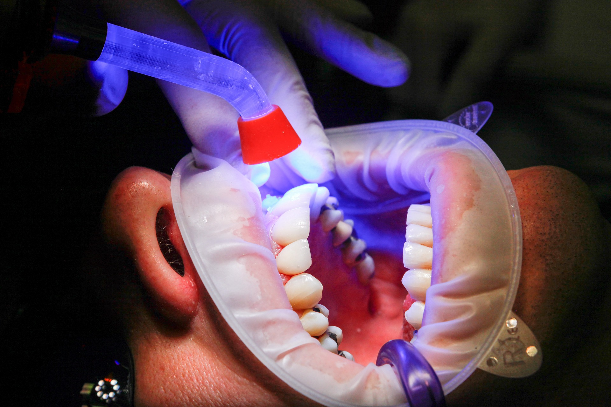
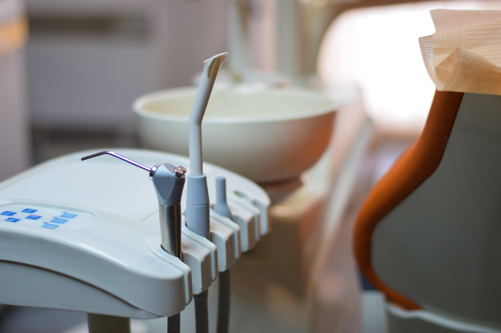
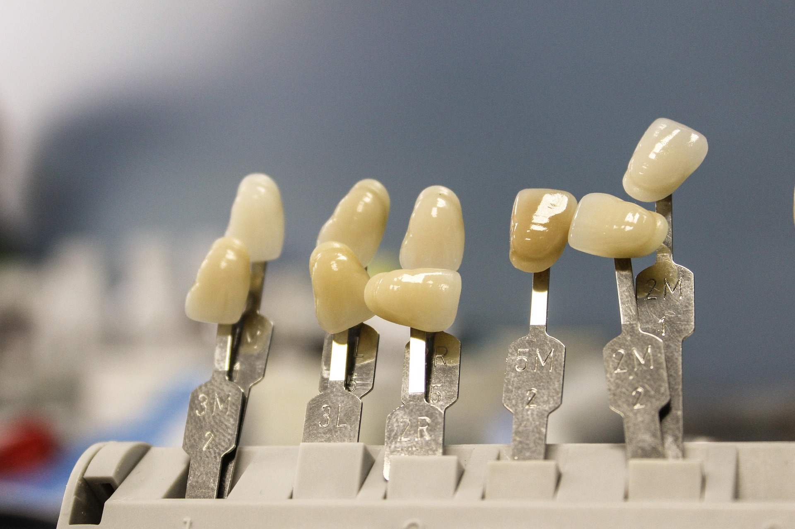
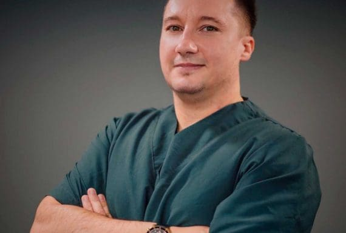
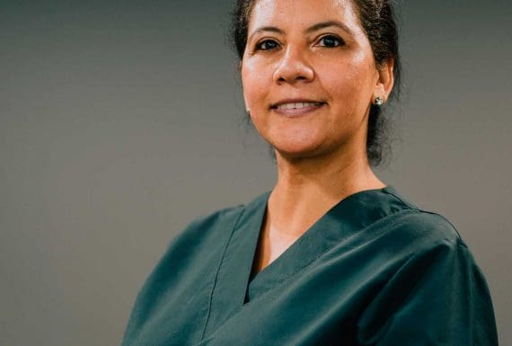
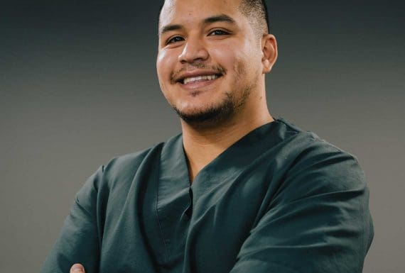
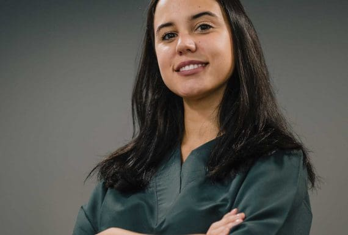

ALFARO DENTAL
Mira más allá.
Libera tu sonrisa.
Tu salud tiene las respuestas — nosotros te ayudamos a encontrarlas.
Reservar Cita↗

Los implantes dentales son la mejor solución ante la pérdida de una pieza dental con resultados naturales.

Lucir una sonrisa espectacular es ahora posible con los últimos avances en estética dental y carillas.

Corrige problemas de malposición y mordida con las ortodoncias más discretas y eficaces del mercado.

Un servicio especializado en la salud oral de los más pequeños en un entorno seguro y divertido.

Recupera la funcionalidad y estética de tu sonrisa con los tratamientos más punteros e integrales.

Evita el desgaste dental y alivia dolores articulares con tratamiento preventivo a tu medida.

Los tratamientos menos invasivos para cuidar tu sonrisa y mantener tus piezas naturales.

Mantén tus encías sanas para un cuidado integral de la salud bucodental y prevención sistémica.
Aumento de labios sin cirugía para armonizar tu estética facial con resultados naturales.
Los implantes dentales son la mejor solución ante la pérdida de una pieza dental con resultados naturales.
Lucir una sonrisa espectacular es ahora posible con los últimos avances en estética dental y carillas.
Corrige problemas de malposición y mordida con las ortodoncias más discretas y eficaces del mercado.
Un servicio especializado en la salud oral de los más pequeños en un entorno seguro y divertido.
Recupera la funcionalidad y estética de tu sonrisa con los tratamientos más punteros e integrales.
Evita el desgaste dental y alivia dolores articulares con tratamiento preventivo a tu medida.
Los tratamientos menos invasivos para cuidar tu sonrisa y mantener tus piezas naturales.
Mantén tus encías sanas para un cuidado integral de la salud bucodental y prevención sistémica.
Aumento de labios sin cirugía para armonizar tu estética facial con resultados naturales.
En Alfaro Clínica Dental actuamos con total honestidad y transparencia, con nosotros no habrá sorpresas. En todo momento sabrás cuál es el objetivo del tratamiento, qué pasos son necesarios para conseguirlo y cuál es el presupuesto final.
Nuestro equipo dental está formado por profesionales que son, ante todo, muy humanos. Pericia técnica, experiencia, innovación, afán por continuar investigando y una excelente relación médico-paciente dan sentido a nuestra visión de la odontología como práctica profesional que nos apasiona cada día.
Además de contar con el mejor equipo humano, nuestra clínica dental en Sants/Montjuic (Barcelona), cuenta también con el mejor equipamiento técnico. Tecnología de vanguardia y materiales de alta gama en unas instalaciones pensadas para tu comodidad.
Nuestra visión de la odontología, además de integral y multidisciplinar, es conservadora: mantenemos tus piezas dentales propias siempre que sea posible, apostamos por la prevención y por las intervenciones menos invasivas.
Nuestros tratamientos de endodoncia, periodoncia, ortodoncia, implantes dentales, trastornos de la ATM y rehabilitación oral nos ayudan a hacerlo posible.
En Alfaro Clínica Dental somos el centro de referencia para las familias de Barcelona. Ponemos especial énfasis en la salud oral de los más pequeños a través de nuestro servicio de odontopediatría, atendiendo las necesidades específicas de niños y adolescentes.
Trabajamos desde la prevención para generar hábitos saludables de por vida, creando un entorno seguro y agradable donde las visitas al dentista sean una experiencia positiva. Apostar por nosotros es garantizar el cuidado que tu salud oral merece.
"Excelente trato y profesionalidad. Me explicaron todo el proceso de mi tratamiento con mucha claridad y transparencia. Muy recomendables."
"La mejor clínica dental de Sants. Fui por una urgencia y me atendieron de maravilla. El equipo es muy humano y las instalaciones impecables."
"Llevé a mis hijos para su primera revisión y fue una experiencia genial. No tuvieron nada de miedo. Gran servicio de odontopediatría."
En Clínica Dental Alfaro combinamos experiencia, tecnología avanzada y un equipo multidisciplinar. Ofrecemos atención personalizada para cada paciente, priorizando la salud y estética dental. Nuestra clínica en Sants destaca por su enfoque integral y la confianza de cientos de pacientes satisfechos en todos los tratamientos que realizamos.
Nuestra Clínica Dental Alfaro está en Barcelona Sants, en Gran Via de les Corts Catalanes. Un espacio moderno y accesible para todas las edades. Solicita tu cita personalizada con nuestro equipo especializado en salud bucodental.
Ofrecemos todos los servicios clave en odontología: desde odontopediatría hasta implantes, estética dental, ortodoncia, endodoncia y periodoncia. En Clínica Dental Alfaro cuidamos la salud oral desde un enfoque integral, tratando cada caso con detalle. Nuestro equipo profesional garantiza soluciones eficaces para pacientes de todas las edades.
La odontopediatría debe comenzar desde la erupción del primer diente. En Clínica Dental Alfaro promovemos visitas desde el primer año de vida para establecer buenos hábitos de higiene. Detectar a tiempo caries o alteraciones en la mordida permite garantizar una correcta salud oral y evitar tratamientos complicados en el futuro.
Elegir un centro odontológico como Alfaro te garantiza atención especializada en todas las ramas dentales. Nos caracterizamos por diagnósticos precisos, equipos tecnológicos modernos y un trato humano excepcional. Nuestra experiencia nos permite atender casos simples y complejos de forma eficaz, mejorando tu calidad de vida a través de una sonrisa saludable.
La odontología estética ofrece soluciones como carillas, blanqueamientos y contorneado dental para mejorar la apariencia de tu sonrisa. En Alfaro evaluamos tu caso y aplicamos técnicas avanzadas que armonizan forma y color dental. Estos tratamientos no solo mejoran lo estético, sino también la seguridad y autoestima de cada paciente.




Únete a la lista de espera para acceso anticipado, beneficios de miembro fundador y ofertas exclusivas de lanzamiento.
Unirse a la lista